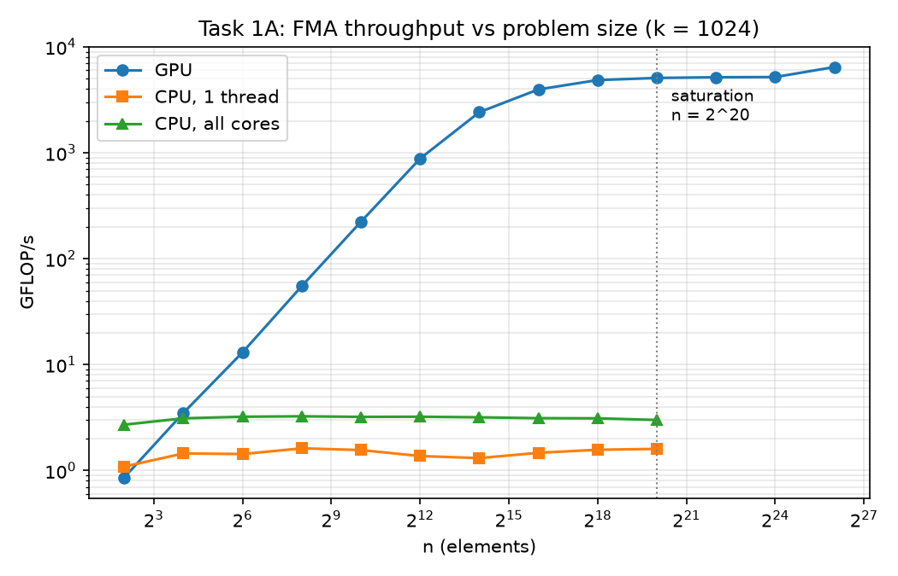
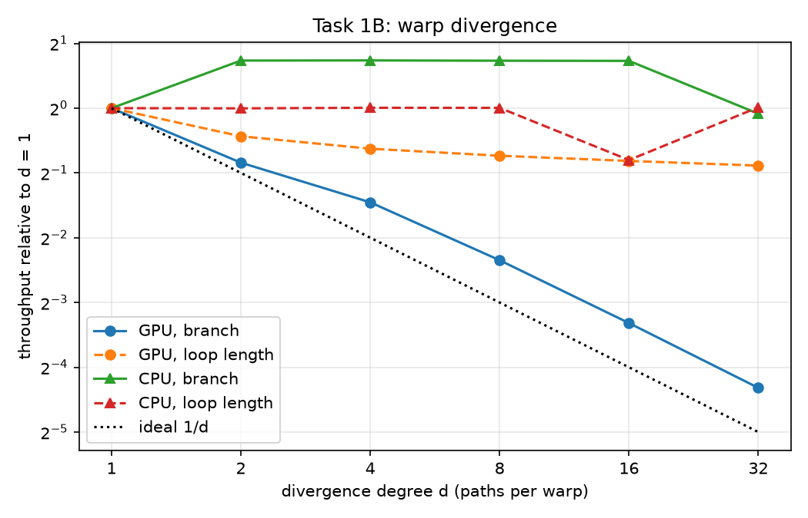
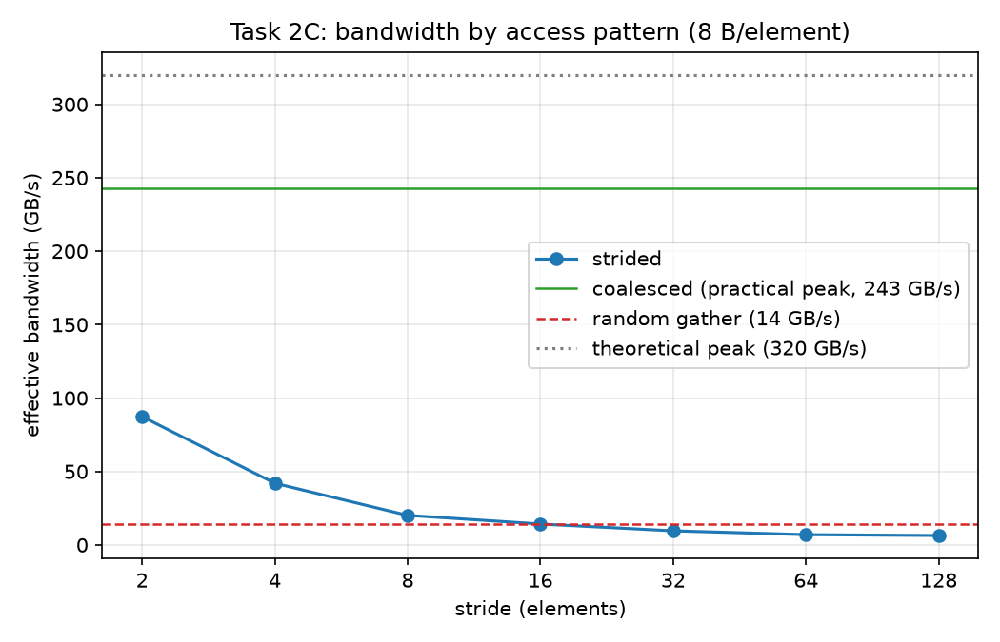
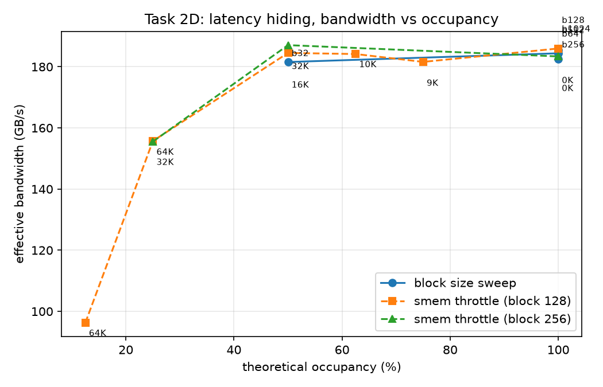

Why the experiments look the way they do, how every number was produced, and the results, including the regimes where the GPU loses.
Aufgabe 1. Ruled by the SIMT execution model: warps of 32 threads on one instruction stream. Costs appear when threads are scarce or disagree.
Aufgabe 2. Ruled by 32-byte memory transactions and latency hiding. Costs appear when access patterns waste transactions or too few warps are resident.
The sheet’s claim: the same chip moves by orders of magnitude along both axes depending purely on how it is asked to work. The job: prove it, with measurements that survive scrutiny.
| Exp. | Probe kernel | The one knob | Everything held fixed |
|---|---|---|---|
| A | 1,024 chained FMAs / thread | thread count n: 4 → 67 M | work per thread, block size, path |
| B | same kernel | paths per warp d: 1 → 32 | n, total work per path (!) |
| C | b[j] = a[j]·c (1 multiply) | address pattern: neighbor / stride / random | bytes moved, block size |
| D | same, grid-stride | resident warps per SM (occupancy) | pattern (best case), total work |
The compute probe does maximal math per byte, the memory probe minimal, so each experiment feels only its own axis. A mixed kernel would measure a blur of both.
Each plot is then literally “metric vs. that knob”. Any change in the curve has exactly one possible cause. That is the entire argument for trusting the numbers.
One FMA = 2 FLOP, k per thread, so GFLOP/s is arithmetic, not estimation. Fast math would let the compiler change how many operations actually run.
Distinct constants, distinct instruction order, __noinline__. Otherwise nvcc merges the branches and Experiment B silently measures nothing. Verified: 19.9× > the ~8× gate.
Every path does identical work; the loop-length variant is even normalized to identical total work per warp. Any slowdown is serialization, nothing else.
All memory patterns are permutations, so sum(b) must equal sum(a)·c. Every configuration is validated; a wrong result aborts the run. All runs: relative error 0.0.
40 SMs · 2,560 FP32 cores · cc 7.5 · 15 GB GDDR6 · theoretical 320.1 GB/s (queried at runtime: 2 × 5,001 MHz × 32 B). Toolkit CUDA 12.8, driver 13.0.
2 cores. Same recipes, same sweeps, same timing convention. Deliberately the weakest link, and flagged as such in the report’s limitations.
Why this shape: the dev machine has no NVIDIA GPU at all. The whole pipeline runs unattended in a Colab notebook and ships results back as a zip; every intermediate product is a plain text file under version control.
cudaEvent markers on the GPU’s own timeline, placed directly around the kernel. Data transfers happen outside the window. Launches are asynchronous, so a CPU clock would time the wrong thing.
First launches pay one-time costs (code upload, clock ramp); the median absorbs cloud hiccups. One convention for GPU and CPU, so every number is comparable.
Every result is written back to memory; chains are serially dependent. A benchmark the compiler can delete or precompute measures an empty kernel.
No ECC/boost control on Colab. Visible in the data as level shifts between runs; handled by reporting plateau values and naming the outliers instead of hiding them.
1 — overhead-dominated: GPU under the CPU line.
2 — ramp: SMs filling, latency still visible.
3 — plateau: every SM saturated, real throughput.
The CPU line has no regimes. That asymmetry is the result.

Structurally identical bodies with different constants get folded into one path + lookup, and the experiment evaporates. Countermeasures: per-path constants and instruction order, __noinline__, and a mandatory verification gate (≥ ~8× at d = 32, else inspect the PTX).

| d | GPU | ideal | CPU |
|---|---|---|---|
| 2 | 1.79× | 2 | flat* |
| 8 | 5.09× | 8 | flat* |
| 32 | 19.9× | 32 | flat* |
*CPU absolute times show no d-trend (~170 ms; the d = 1 reference was itself a VM-noise outlier, so ratios mislead). GPU: ~2/3 of the ideal cost: the d = 1 chain is latency-bound, and Volta+ independent thread scheduling interleaves the divergent streams. Serialization survives; its edge is softened.
Naive striding revisits some elements and skips others, so the three patterns would not move the same data. The matrix-transpose-style mapping keeps thread neighbors stride apart while touching each element once, and the checksum proves it.

From stride 16 the strided pattern is no better than random: once every element costs its own transaction, order stops mattering.
Nsight Compute needs counter permissions Colab does not grant. The runtime API’s occupancy value is used instead and this is named openly in the limitations, rather than presenting profiled numbers that do not exist.

Absolute level (~185) sits below Experiment C’s 243 GB/s: the minimal resident grid trades some memory-level parallelism for the controlled comparison.
Below ~1 M threads the T4 never showed rated speed; below ~16 threads it lost to a 2-core CPU outright. Small problems belong on the CPU.
32 paths per warp cost 19.9×. If branching is unavoidable, branch at warp granularity, not per lane.
243 vs 6.4 GB/s for identical work. Structure-of-arrays, neighbors reading neighbors, no gathers you can avoid.
The plateau began at 50%. Enough resident warps to hide latency, then stop optimizing for the number.
Same silicon in every measurement. Factors of 21, 38, 1,600 appeared and vanished based only on how the work was presented, which is what the sheet asked to be demonstrated.